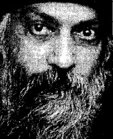

Osho'nun öğretileri, bireysel anlam arayışından, toplumun yüzleştiği en acil sosyal ve siyasi meselelere kadar geniş bir alanı kapsadığı için herhangi bir kategoriye sokulamamaktadır. Kitapları yazılmamış, otuz beş yılık bir süre zarfında uluslararası bir izleyici kitlesine yaptığı konuşmaların ses ve görüntü kayıtlarından yazıya dökülerek derlenmiştir. Osho, Londra'da yayınlanan, Sunday Times tarafından Yirminci Yüzyıl'ın bin önemli insanından birisi ve Amerikalı yazar Tim Robbins tarafından "İsa Mesih'ten bu yana hayata gelmiş en tehlikeli insan" olarak tanımlanmıştır.
Osho, kendi çalışmaları hakkında, yeni tür bir insanın doğumu için uygun şartları oluşturmaya katkı yaptığını söylemiştir. Bu yeni insanı sıklıkla "Zorba- Buda" olarak tanımlar. Hem Yunanlı Zorba gibi dünyevi zevklerden, hem de Guatam Buda'nın sessiz dinginliğinden zevk alabilen bir insan. Osho'nun bütün çalışmalarına derinlemesine işlemiş olan vizyon hem Doğunun sonsuz bilgeliğini, hem de Batı bilim ve teknolojisinin en yüksek potansiyelini kavrar.
Osho ayrıca çağdaş hayatın hızlanmış temposunu kabul eden meditasyon yaklaşımı ve içsel dönüşüm bilimine yaptığı çığır açan katkılarıyla tanınmıştır. Onun özgün, aktif meditasyonları beden ve zihnin birikmiş stresini atmak için tasarlanmıştır. Bu sayede düşünceden özgürleşmek ve meditasyonun dingin ruh halini yaşamak daha kolay olur.
Yazarın otobiyografi olarak Türkçe'de yayınlanmış bir kitabı mevcuttur:
"Osho - Provakatör Mistik: Aykırı bir Spiritüelin Gerçek Yaşam Öyküsü" Omega Yayınları, 2004, İstanbul